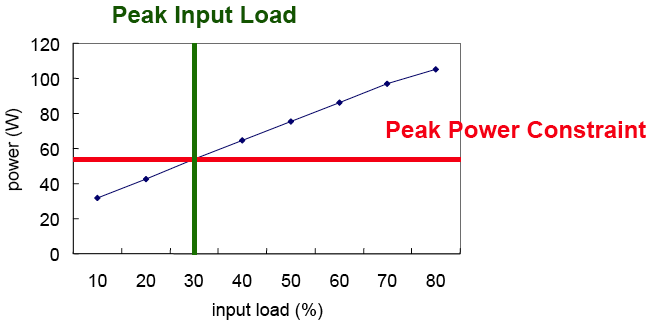
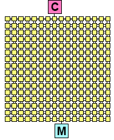
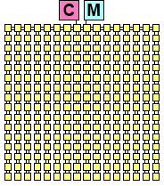
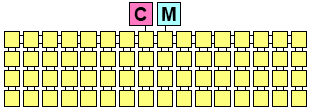
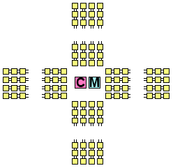
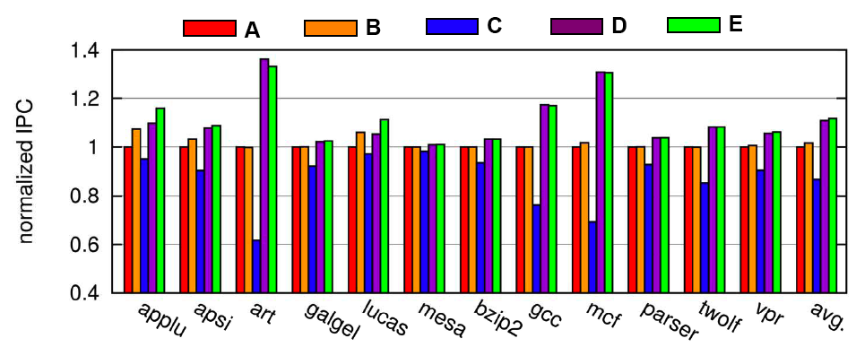

Communication-Centric CMP Design
High Performance Computing Laboratory
Peak Power Control
Communication traffic of
these applications makes routers greedy to acquire more
power such that the total consumed power of the network
may exceed the supplied power and cause reliability
problems. To ensure high performance and power
constraint satisfaction, the on-chip network must have a
peak power control mechanism.
The satisfaction of peak power consumption
in a single chip is essential to maintaining supply voltage
levels, to supporting reliability, to limiting capacity of
heat sinks and to meeting affordable packaging costs.
Since the total power supplied to a chip is distributed to
all the units of a chip, each unit should keep its power
consumption below a preset upper limit. With the
increasing demand for interconnect bandwidth, an on-chip
network becomes the major power consumer in a
chip.
Multimedia applications on a System-on-Chip (SoC)
are extensively being studied for bandwidth requirements
over heterogeneous components of the network.
However, we are focusing on the QoS environment in the
homogenous network such as chip multiprocessors. An
on-chip network must support guarantee for the delivery
of multimedia data (real-time traffic) as well as the
normal message-oriented communication (best-effort
traffic).
We propose a credit-based peak power
control to meet pre-specified power constraints while
maintaining the service quality, by regulating injection of
packets. We take different approaches for different traffic
types. For real-time traffic, instead of throttling the
injection of packets of already established connections,
our scheme works by determining the acceptance of a
new connection based on the requirement of the
consumed power and the available power budget as in the
case of admission control. We also show how to calculate
the expected power consumption of a connection from its
bandwidth requirement. For best-effort traffic, we
calculate the required power of a packet based on the
distance from its source to the destination. If the expected
power consumption exceeds the power budget, we throttle
the injection of the packet such as the congestion control.
|  |
| Peak Power Control By Regulating Input Load |
Domain-Specific On-Chip Network Design in Large Scale Cache Systems
As circuit integration technology advances, the design of
efficient interconnects has become critical. On-chip networks
have been adopted to overcome scalability and the poor resource
sharing problems of shared buses or dedicated wires.
However, using a general on-chip network for a specific domain
may cause underutilization of the network resources
and huge network delays because the interconnects are not
optimized for the domain. Addressing these two issues is
challenging because in-depth knowledges of interconnects
and the specific domain are required.
Recently proposed Non-Uniform Cache Architectures
(NUCAs) use wormhole-routed 2D mesh networks to improve
the performance of on-chip L2 caches. We observe that network
resources in NUCAs are underutilized and occupy considerable
chip area (52% of cache area). Also the network
delay is significantly large (63% of cache access time). Motivated
by our observations, we investigate how to optimize
cache operations and design the network in large scale cache
systems. We propose a single-cycle router architecture that
can efficiently support multicasting in on-chip caches. Next,
we present Fast-LRU replacement, where cache replacement
overlaps with data request delivery. Finally we propose a
deadlock-free XYX routing algorithm and a new halo network
topology to minimize the number of links in the network.
|  |
 |
| Design A: 16x16 Mesh (64KB) |
Design B: 16x16 Simplified Mesh (64KB) |
|  |
| Design C: 16x4 Simplified Mesh (256KB) |
|  |
 |
| Design D: Spike-16 Halo (64KB) |
Design E: Spike-5 Halo (Non-uniform size) |
| Domain-Specific Network Development |
|  |
| Performance of Different Designs |
Adaptive Data Compression with Table-based Hardware
The design of a low-latency on-chip network is critical
to provide high system performance, because the network
is tightly integrated with the processors as well as the onchip
memory hierarchy operating with a high frequency
clock. To provide low latency, there have been significant
efforts on the design of routers and network
topologies.
However, due to the stringent power and
area budgets in a chip, simple routers and network topologies
are more desirable. In fact, conserving metal resource for
link implementation can provide more space for logic such
as cores or caches. Therefore, we focus on maximizing
bandwidth utilization in the existing network.
Data compression has been adopted in hardware designs
to improve performance and power. Cache compression increases
the cache capacity by compressing block data and
accommodating more blocks in a fixed space.
Bus compression also expands the bus width by encoding
a wide data as a small size code. Recently data
compression is explored in the on-chip network domain for
performance and power.
We investigate adaptive data compression
for on-chip network performance optimization, and propose
a cost-effective implementation. Our design uses a tablebased
compression approach by dynamically tracking value
patterns in traffic. Using a table for compression hardware
processes diverse value patterns adaptively rather than taking
static patterns based on zero bits in a word. The tablebased
approach can easily achieve a better compression
rate by increasing the table size. However, the table for
compression requires a huge area to keep data values on a
flow basis.
In other words, the number of tables depends on
the network size, because communication cannot be globally
managed in a switched network. To address this problem, we
present a shared table scheme that stores identical values as a
single entry across different flows. In addition, a management
protocol for consistency between an encoding table and a
decoding table works in a distributed way so that it allows
out-of-order delivery in a network.
We demonstrate performance improvement techniques to
reduce negative impact of compression on performance.
Streamlined encoding combines encoding and flit injection
processes into a pipeline to minimize the long encoding
latency. Furthermore, dynamic compression management optimizes
our compression scheme by selectively applying
compression to congested paths.
Publications
-
Peak Power Control for a QoS Capable On-Chip Network,
Y. Jin, E. J. Kim, K. H. Yum,
International Conference on Parallel Processing (ICPP), June 2005
IBM Austin Conference on Energy-Efficient Design (ACEED), March 2005 (poster)
-
A Domain-Specific On-Chip Network Design for Large Scale Cache Systems,
Y. Jin, E. J. Kim, K. H. Yum,
International Symposium on High-Performance Computer Architecture (HPCA), February 2007
-
Adaptive Data Compression for High-Performance Low-Power On-Chip Networks,
Y. Jin, K. H. Yum, E. J. Kim,
International Symposium on Microarchitecture (MICRO), November 2008
-
Recursive Partitioning Multicast: A Bandwidth-Efficient Routing for Networks-On-Chip
,
L. Wang, Y. Jin, H. J. Kim and E. J. Kim,
International Symposium on Networks-on-Chip (NOCS), San Diego, CA, May 2009
|